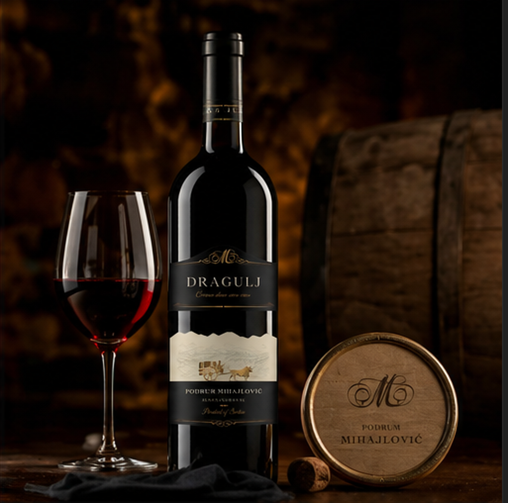

Degustacija
Tajne savršene degustacije vina: saveti iz našeg podruma
Degustacija vina podrazumeva pažljivo posmatranje, mirisanje i kušanje. Vizuelna procena otkriva starost i kvalitet, arome govore o karakteru, a tek na nepcu se otkriva prava priroda vina — njegova kiselost, tanini i završni ukus.